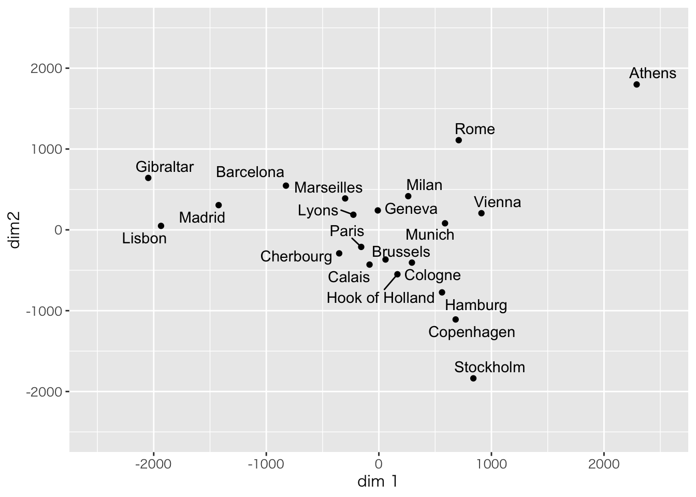
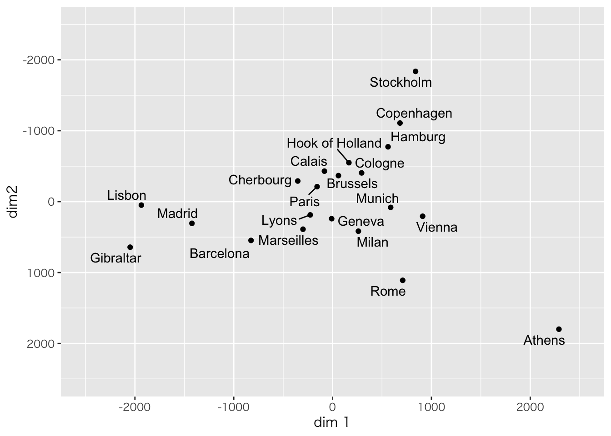
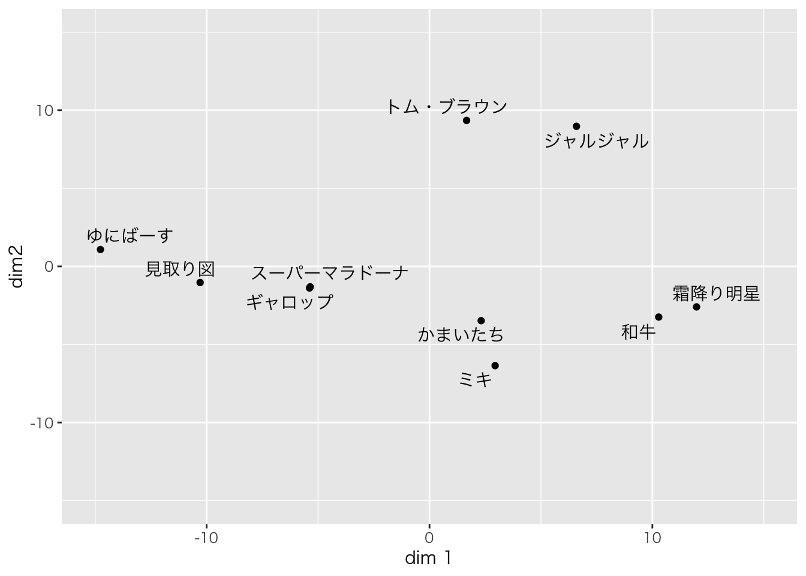
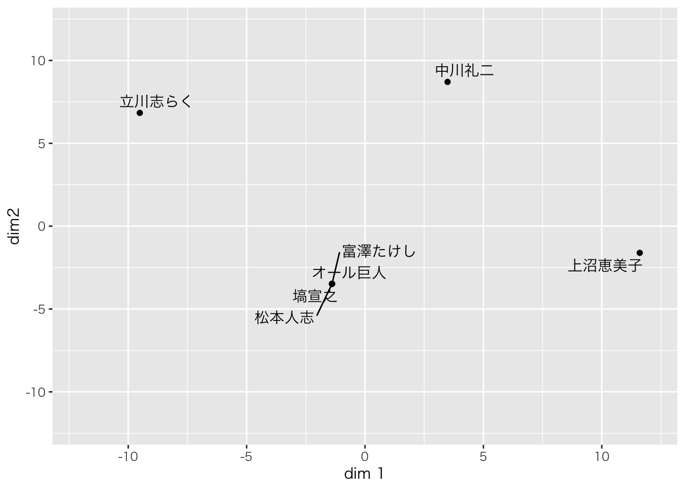

# 必須ツール
library(tidyverse)## ─ Attaching packages ──────────────────── tidyverse 1.3.1 ─## ✓ ggplot2 3.3.3 ✓ purrr 0.3.4
## ✓ tibble 3.1.2 ✓ dplyr 1.0.6
## ✓ tidyr 1.1.3 ✓ stringr 1.4.0
## ✓ readr 1.4.0 ✓ forcats 0.5.1## ─ Conflicts ───────────────────── tidyverse_conflicts() ─
## x dplyr::filter() masks stats::filter()
## x dplyr::lag() masks stats::lag()# ラベルの重複を避けるパッケージ
library(ggrepel)
# マカーの呪文
old = theme_set(theme_gray(base_family = "HiraKakuProN-W3"))ヨーロッパ都市間の距離データ(Rのデフォルト)を使います
eurodist## Athens Barcelona Brussels Calais Cherbourg Cologne Copenhagen
## Barcelona 3313
## Brussels 2963 1318
## Calais 3175 1326 204
## Cherbourg 3339 1294 583 460
## Cologne 2762 1498 206 409 785
## Copenhagen 3276 2218 966 1136 1545 760
## Geneva 2610 803 677 747 853 1662 1418
## Gibraltar 4485 1172 2256 2224 2047 2436 3196
## Hamburg 2977 2018 597 714 1115 460 460
## Hook of Holland 3030 1490 172 330 731 269 269
## Lisbon 4532 1305 2084 2052 1827 2290 2971
## Lyons 2753 645 690 739 789 714 1458
## Madrid 3949 636 1558 1550 1347 1764 2498
## Marseilles 2865 521 1011 1059 1101 1035 1778
## Milan 2282 1014 925 1077 1209 911 1537
## Munich 2179 1365 747 977 1160 583 1104
## Paris 3000 1033 285 280 340 465 1176
## Rome 817 1460 1511 1662 1794 1497 2050
## Stockholm 3927 2868 1616 1786 2196 1403 650
## Vienna 1991 1802 1175 1381 1588 937 1455
## Geneva Gibraltar Hamburg Hook of Holland Lisbon Lyons Madrid
## Barcelona
## Brussels
## Calais
## Cherbourg
## Cologne
## Copenhagen
## Geneva
## Gibraltar 1975
## Hamburg 1118 2897
## Hook of Holland 895 2428 550
## Lisbon 1936 676 2671 2280
## Lyons 158 1817 1159 863 1178
## Madrid 1439 698 2198 1730 668 1281
## Marseilles 425 1693 1479 1183 1762 320 1157
## Milan 328 2185 1238 1098 2250 328 1724
## Munich 591 2565 805 851 2507 724 2010
## Paris 513 1971 877 457 1799 471 1273
## Rome 995 2631 1751 1683 2700 1048 2097
## Stockholm 2068 3886 949 1500 3231 2108 3188
## Vienna 1019 2974 1155 1205 2937 1157 2409
## Marseilles Milan Munich Paris Rome Stockholm
## Barcelona
## Brussels
## Calais
## Cherbourg
## Cologne
## Copenhagen
## Geneva
## Gibraltar
## Hamburg
## Hook of Holland
## Lisbon
## Lyons
## Madrid
## Marseilles
## Milan 618
## Munich 1109 331
## Paris 792 856 821
## Rome 1011 586 946 1476
## Stockholm 2428 2187 1754 1827 2707
## Vienna 1363 898 428 1249 1209 2105メトリックなMDSで分析
# MDSの関数
result.MDS1 <- cmdscale(eurodist,k=3)
# 結果と描画
result.MDS1 %>% as.data.frame %>%
dplyr::mutate(label=rownames(.)) %>%
ggplot(aes(x=V1,y=V2,label=label))+geom_point()+geom_text_repel()+
xlim(-2500,2500)+ylim(-2500,2500)+xlab("dim 1")+ylab("dim2")
南北反転？
# y軸反転
result.MDS1 %>% as.data.frame %>%
dplyr::mutate(label=rownames(.)) %>%
ggplot(aes(x=V1,y=V2,label=label))+geom_point()+geom_text_repel()+
xlim(-2500,2500)+ylim(2500,-2500)+xlab("dim 1")+ylab("dim2")
サンプルデータ（あやめ）
iris[,-5] %>% head()| Sepal.Length | Sepal.Width | Petal.Length | Petal.Width |
|---|---|---|---|
| 5.1 | 3.5 | 1.4 | 0.2 |
| 4.9 | 3.0 | 1.4 | 0.2 |
| 4.7 | 3.2 | 1.3 | 0.2 |
| 4.6 | 3.1 | 1.5 | 0.2 |
| 5.0 | 3.6 | 1.4 | 0.2 |
| 5.4 | 3.9 | 1.7 | 0.4 |
# ユークリッド距離
iris[,-5] %>% head() %>% dist()## 1 2 3 4 5
## 2 0.5385165
## 3 0.5099020 0.3000000
## 4 0.6480741 0.3316625 0.2449490
## 5 0.1414214 0.6082763 0.5099020 0.6480741
## 6 0.6164414 1.0908712 1.0862780 1.1661904 0.6164414# マンハッタン距離
iris[,-5] %>% head() %>% dist(method="manhattan")## 1 2 3 4 5
## 2 0.7
## 3 0.8 0.5
## 4 1.0 0.5 0.4
## 5 0.2 0.7 0.8 1.0
## 6 1.2 1.9 2.0 2.0 1.2# ミンコフスキー距離
iris[,-5] %>% head() %>% dist(method="minkowski",p=3)## 1 2 3 4 5
## 2 0.5104469
## 3 0.4514357 0.2571282
## 4 0.5748897 0.3072317 0.2154435
## 5 0.1259921 0.6009245 0.4514357 0.5748897
## 6 0.5013298 0.9615398 0.9117793 1.0131594 0.5013298M1_2018 <- matrix(c(85,88,88,99,86,87,89,97,93,93,
85,89,92,93,89,82,90,93,98,94,
88,89,94,88,89,84,98,86,97,98,
83,85,90,92,86,80,88,91,94,93,
91,90,92,93,90,91,93,90,96,94,
88,87,89,93,87,84,90,87,93,92,
86,89,91,90,87,86,90,89,91,92),ncol=7)
row.names(M1_2018) <- c("見取り図",
"スーパーマラドーナ",
"かまいたち",
"ジャルジャル",
"ギャロップ",
"ゆにばーす",
"ミキ",
"トム・ブラウン",
"霜降り明星",
"和牛")
colnames(M1_2018) <- c("立川志らく",
"塙宣之",
"上沼恵美子",
"松本人志",
"中川礼二",
"オール巨人",
"富澤たけし")
dist_M1 <- dist(M1_2018)
# 距離データ表示
dist_M1## 見取り図 スーパーマラドーナ かまいたち ジャルジャル
## スーパーマラドーナ 6.403124
## かまいたち 13.038405 8.426150
## ジャルジャル 19.646883 15.264338 13.416408
## ギャロップ 5.477226 3.000000 8.831761 16.613248
## ゆにばーす 7.348469 10.908712 18.761663 22.934690
## ミキ 13.784049 10.535654 5.291503 15.297059
## トム・ブラウン 16.941074 11.916375 12.609520 7.416198
## 霜降り明星 22.583180 18.083141 10.862780 12.489996
## 和牛 20.149442 15.652476 8.246211 12.000000
## ギャロップ ゆにばーす ミキ トム・ブラウン 霜降り明星
## スーパーマラドーナ
## かまいたち
## ジャルジャル
## ギャロップ
## ゆにばーす 11.045361
## ミキ 11.045361 19.595918
## トム・ブラウン 13.228757 19.104973 15.652476
## 霜降り明星 18.601075 28.071338 11.661904 15.716234
## 和牛 16.431677 25.573424 8.124038 14.662878 4.898979library(MASS)##
## 次のパッケージを付け加えます: 'MASS'## 以下のオブジェクトは 'package:dplyr' からマスクされています:
##
## selectresult.MDS2 <- isoMDS(dist_M1,k=2)## initial value 1.421320
## iter 5 value 0.721192
## iter 10 value 0.195694
## iter 15 value 0.100712
## iter 20 value 0.074457
## iter 25 value 0.050977
## iter 30 value 0.029949
## iter 35 value 0.018306
## iter 40 value 0.015114
## iter 45 value 0.013833
## iter 50 value 0.013671
## final value 0.013671
## stopped after 50 iterationsST <- c()
for(i in 1:9){
ST[i] <- isoMDS(dist_M1,k=i)$stress
}## initial value 20.382952
## final value 19.061340
## converged
## initial value 1.421320
## iter 5 value 0.721192
## iter 10 value 0.195694
## iter 15 value 0.100712
## iter 20 value 0.074457
## iter 25 value 0.050977
## iter 30 value 0.029949
## iter 35 value 0.018306
## iter 40 value 0.015114
## iter 45 value 0.013833
## iter 50 value 0.013671
## final value 0.013671
## stopped after 50 iterations
## initial value 0.312984
## iter 5 value 0.036142
## final value 0.000000
## converged
## initial value 0.000000
## final value 0.000000
## converged
## initial value 0.006260
## final value 0.000000
## converged
## initial value 0.014944
## final value 0.000000
## converged
## initial value 0.000000
## final value 0.000000
## converged
## initial value 0.000000
## final value 0.000000
## converged
## initial value 0.000000
## final value 0.000000
## convergedplot(ST,type="b")result.MDS2$points %>% as.data.frame %>%
dplyr::mutate(label=rownames(.)) %>%
ggplot(aes(x=V1,y=V2,label=label))+geom_point()+
geom_text_repel(family = "HiraKakuProN-W3")+
xlim(-15,15) + ylim(-15,15)+
xlab("dim 1")+ylab("dim2") 
result.MDS3 <- dist(t(M1_2018)) %>% isoMDS()## initial value 11.739729
## iter 5 value 3.554095
## iter 10 value 0.528016
## iter 15 value 0.152710
## iter 20 value 0.051220
## final value 0.006151
## convergedresult.MDS3$points %>% as.data.frame %>%
dplyr::mutate(label=rownames(.)) %>%
ggplot(aes(x=V1,y=V2,label=label))+geom_point()+
geom_text_repel(family = "HiraKakuProN-W3")+
xlim(-12,12) + ylim(-12,12)+
xlab("dim 1")+ylab("dim2") 